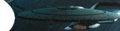
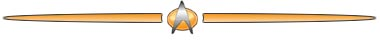
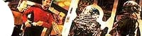

| Conhea a histria da produo de A Nova Gerao relatada em detalhes desde a concepo original de Gene Roddenberry em 1986 at a concluso da srie, em 1994. Em captulos!
Captulo 1: Combustível
do mundo atual
Saiba como a Paramount vendeu A Nova Geração em syndication, aqui.
Captulo 3: Câmeras
no século 24
 Jornada
e Gene estão de volta ao mundo da televisão. Leia
aqui.
Captulo 4: Nadando contra a mar
A
histria completa da produo da segunda temporada da srie, aqui.
Captulo 5: Acertando
os ponteiros
A histria completa da produo da terceira temporada da srie, aqui.


Veja alguns dos artigos especiais do Trek Brasilis que trazem insights a respeito da produo de A Nova Gerao
Uniformes de A Nova Gerao
Saiba aqui como foram criados os uniformes da srie, que definiram padres. Gnese de um capito e de um cone
Descubra como Gene Roddenberry inventou Jean-Luc Picard aqui. A volta do 'Miracle Worker'
Veja como Scotty foi parar na engenharia de Geordi La Forge clicando aqui. Abrindo as portas do passado
Saiba como Sarek uniu as duas geraes de Jornada clicando aqui. Meio homens, meio mquinas
 Leia tudo sobre as aparies dos Borgs na Nova Gerao, clicando aqui. "The Chase": episdio la Roddenberry
Por que h tantos humanides na Via Lctea? Descubra a resposta clicando aqui. "The Pegasus": enfim uma explicao
Por que a Federao no usa dispositivos de camuflagem? Saiba clicando aqui. |